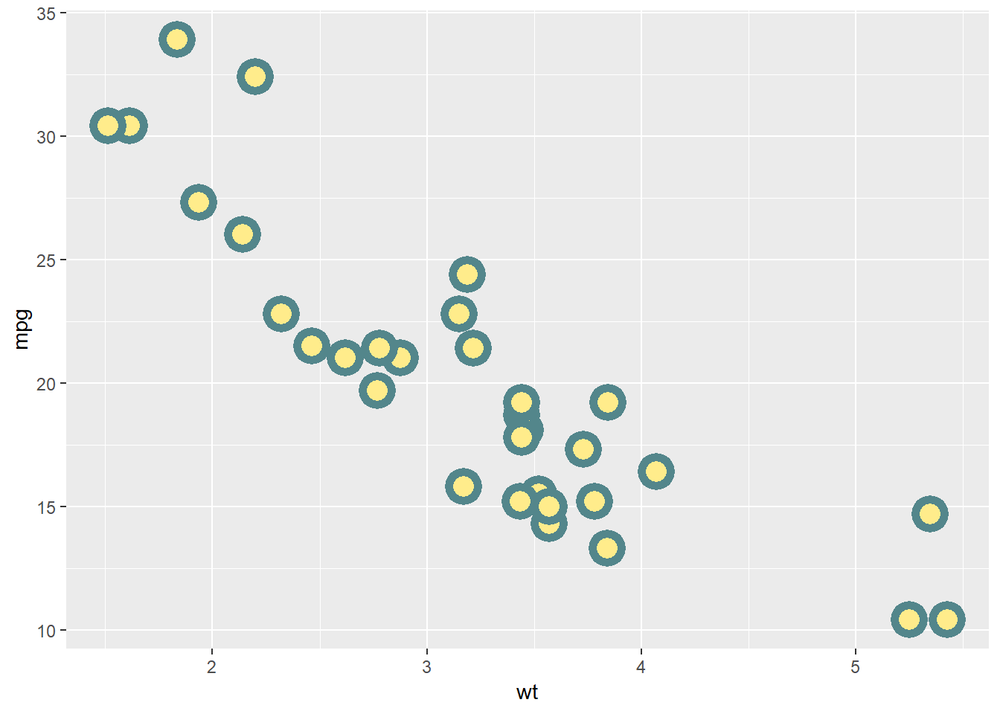
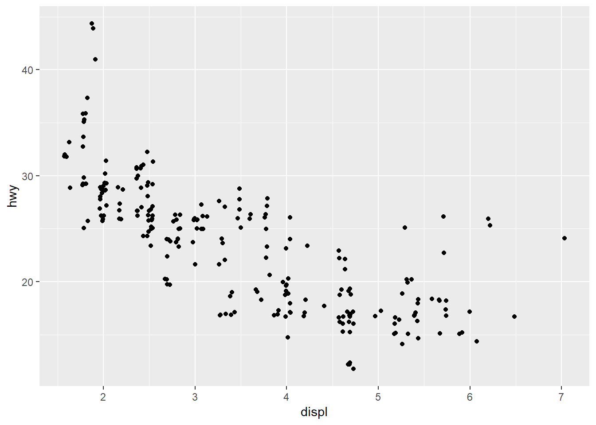
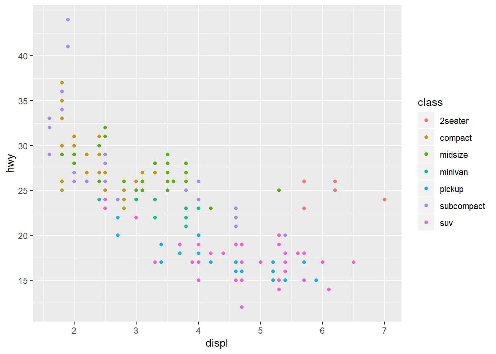

Workshop: ggplot for Visualization
The outline, explanations, and code examples for this workshop are derived from the work found in the Data Visualization chapter and the Graphics for Communication chapter of Grolemund’s and Wickham’s R for Data Science. Please reference Grolemund & Wickham as the source. My goal with this document is to create an outline for a two hour workshop on ggplot. Solutions to R4DS exercises can be found in Jeffrey Arnold’s R for Data Science Solutions.
Prerequisites
You’ll need
- R
- RStudio
- Tidyverse
This tutorial assumes you already have R and RStudio installed. Once you have launched RStudio, load the tidyverse super package of libraries: library(tidyverse). Since the Tidyverse packages include the ggplot2 package you do not have to load ggplot2 separately. If the library(tidyverse) command gives an error, you probably want to install.packages("tidyverse") before attaching the library. Installation need only be done once. Attaching the tidyverse library must be done each time you execute your R script.
library(tidyverse)
library(sf)Basic syntax
ggplot syntax template is as follows…
ggplot(data = <DATA>) +
<GEOM_FUNCTION>(mapping = aes(<MAPPINGS>))- The data argument takes a Tibble (or data frame)
The pipe operator for
ggplotis a plus sign+.- This is different from the rest of the tidyverse, which came later and settled on the magritter style of pipe operator:
%>% - Tidyverse currently uses two different pipe operators, depending on the package. The two styles of pipe operator are dependent on particular packages within the Tidyverse and are not interchangable.
- This is different from the rest of the tidyverse, which came later and settled on the magritter style of pipe operator:
The GEOM_FUNCTION is a function of your choosing, used to plot your visualization.
- Some of the most common geom_s are scatter plots, bar plots, and box plots.
- There are numerous geom_functions. At some point you will want to browse the well crafted documentation and learn about other GEOMs.
- Some of the most common geom_s are scatter plots, bar plots, and box plots.
The mapping function requires, minimally, the
aes()function.- This enables you to assign assign the variables of your data frame to the appropriate axis in your plot.
Below is a basic example. The geom_point() function generates a scatter plot from the on-board mpg tibble, a dataset of fuel economy data compiled by the US government. displ and hwy are variables in the dataset assigned to the x and y axis, respectively.
ggplot(data = mpg) +
geom_point(mapping = aes(x = displ, y = hwy))
The Data
As stated above, ggplot takes a tibble (data frame) for input. Beyond identifying the data source, one has to map the variables to a geom axis. Different geom_s require different data types. Understanding the definitions of continuous, categorical, and discrete variables – as well understanding R data structures (factors, vectors, date/time, strings) – will be immensely helpful to you. You can read all about that in Grolemund’s & Wickham’s R4DS book. Meanwhile, let’s have a look at the mpg data we just visualized. Look up the on-board dataset in the help: ?mpg to learn more about the variables.
mpgAesthetics / Tweaking
In the book, R4DS, by Grolemund & Wickham the authors discuss some mpg data points that seem to fall outside the linear trend. Specifically, see the blue data points below. To investigate trends such as this, use ggplot to alter the levels of the aesthetics. We’ll discuss how to map the aesthetic levels throughout this workshop. Remember, this material is presented in R4DS.

Levels
An aethetic is a visual property of objects in the plot. For example: shape, color.
- See Also: size, opacity (alpha), stroke, and more
Each property can have different levels. For example some levels of shape are circle, square, triangle. By adding variables and/or changing the levels of the aesthetics you can change the visual appearance. The effectiveness of the different aesthetics will vary with the data type. R will often provide warnings – suppressed in this tutorial – depending on the quality of the mapping association.
Color
Below, map a third variable, class to the color aesthetic.
ggplot(data = mpg) +
geom_point(mapping = aes(x = displ, y = hwy, color = class))
Shape
We can change the shape aesthetic in the same way as we changed the color. Notice, R will only map to six distinct shapes. (Learn more by ?pch, or Google Search for “shapes in R”)
ggplot(data = mpg) +
geom_point(mapping = aes(x = displ, y = hwy, shape = class))
Manual vs automatic aethetics
- Levels mapped inside the
aes()are assigned dynamically. - Levels mapped manually outside the
aes(), but still inside thegeom_(), are static. This allows the coder to some flexibility. For Example: See belowcolor = "blue"is outside the aesthetic but inside the geom function.
ggplot(data = mpg) +
geom_point(mapping = aes(x = displ, y = hwy), color = "blue")
Exercises
3.3.1.1
(Question) What’s gone wrong with this code? Why are the points not blue? (Solution)
ggplot(data = mpg) +
geom_point(mapping = aes(x = displ, y = hwy, color = "blue"))
3.3.1.3
Map a continuous variable to color, size, and shape. How do these aesthetics behave differently for categorical vs. continuous variables? Solution
3.3.1.4
What happens if you map the same variable to multiple aesthetics? Soluion
Aethetics revisited
Stroke
Above I noted that there are many different aesthetics including shape, color, size, opacity (alpha), and stroke. Let’s take a look at stroke and note two additional features…
- When using
stroke, also usefill strokemay not work with every shape. Check the help pages for more information
Below the stroke (line thickness) is set to 3. The color of the stroke is cadetblue4.
ggplot(mtcars, aes(wt, mpg)) +
geom_point(shape = 21, color = "cadetblue4", fill = "lightgoldenrod1", size = 5, stroke = 3)
Layers
Regression Line
Like many graphics programs you can built your vector graphics in layers. For example, add a regression line with geom_smooth()
ggplot(data = mpg) +
geom_point(mapping = aes(x = displ, y = hwy, color = class)) +
geom_smooth(mapping = aes(x = displ, y = hwy))ggplot R object
To clarify code changes, let’s introduce some code changes. All ggplot plots can be assigned as an R object. So, for example…
hwy_plot <- ggplot(data = mpg) +
geom_point(mapping = aes(x = displ, y = hwy, color = class))
hwy_plot
Now it will be easier to see the code changes. Building the same layered plot as before, this time you can more easily see the code change: geom_smooth(mapping = aes(x = displ, y = hwy))
hwy_plot +
geom_smooth(mapping = aes(x = displ, y = hwy))
Additional Aesthetics
In the next example, notice the regression_line aesthetic operates the same as before but is applied to a categorical variable. A third variable, drv, is used to highlight a new level in the aesthetic. In this case, we’ll show different levels of regression based on the categorical drv variable.
hwy_plot +
geom_smooth(mapping = aes(x = displ, y = hwy, linetype = drv))
Standard Error
Since each geom can have it’s own unique arguments, consult the documentation to learn how to manipulate the appearance. Here we can consult ?geom_smooth and learn how to remove the standard error shading by setting se = FALSE.
hwy_plot +
geom_smooth(mapping = aes(x = displ, y = hwy, linetype = drv), se = FALSE)
Exercises
http://r4ds.had.co.nz/data-visualisation.html#exercises-3
3.6.1.5
Will these two graphs look different? Why/why not? Solution
ggplot(data = mpg, mapping = aes(x = displ, y = hwy)) +
geom_point() +
geom_smooth()
ggplot() +
geom_point(data = mpg, mapping = aes(x = displ, y = hwy)) +
geom_smooth(data = mpg, mapping = aes(x = displ, y = hwy))Facets
facet_wrap
Facet a plot on a single discrete variable, e.g. the class variable that categorically identifies the type of automobile (e.g. compact, midsize, minivan, etc.)
hwy_plot +
facet_wrap(~ class, nrow = 2)facet_grid
facet a plot on two variables
hwy_plot +
facet_grid(drv ~ cyl)Statistical Transformations
Importantly, you need to know which geom arguments to use for your desired outcome. Below the geom_bar and stat_count demonstrate the issue. geom_bar & stat_count can generally be used interchangeably.
Bar Plot
In the next sets of examples we will use the on-board dataset, diamonds. Diamonds is a dataset covering various characteristics of the precious gem. You can get help on diamonds: ?diamonds
Automtic Categorization
By default the geom_bar and stat_count will total the raw numbers from the data frame.
ggplot(data = diamonds) +
geom_bar(mapping = aes(x = cut))
ggplot(data = diamonds) +
stat_count(mapping = aes(x = cut))
Overriding the default
As shown above performing statistical transformations by calculating summary totals for variables, above, is a convenient default setting in ggplot::geom_bar and for other particular geom_’s. Sometimes I find it more logical to use dplyr (and forcats) to generate summary tables. However, the totals then have to be handled in a special manner after piping to ggplot (stat = "identity).
identity
use the pre-define totals “as is”: (stat = "identity)
diamonds %>%
count(cut) %>%
ggplot() +
geom_bar(mapping = aes(x = cut, y = n), stat = "identity")
Proportion
generating a proportion automatically is super nifty…
y = ..prop.., group = 1
ggplot(data = diamonds) +
geom_bar(mapping = aes(x = cut, y = ..prop.., group = 1))
Fill color
fill = cut
ggplot(data = diamonds) +
geom_bar(mapping = aes(x = cut, fill = cut))
Stacked
fill = clarity
ggplot(data = diamonds) +
geom_bar(mapping = aes(x = cut, fill = clarity))
Side by Side
position = "dodge"
ggplot(data = diamonds) +
geom_bar(mapping = aes(x = cut, fill = clarity), position = "dodge")
Jitter
jitter can help solve the problem of overplotting, as can dodge discussed above.
ggplot(data = mpg) +
geom_point(mapping = aes(x = displ, y = hwy), position = "jitter")
Other geom_s
There are a lot of options and visualizations available to you via ggplot. The challenge becomes knowing what you can create based on the characteristics of your data. The ggplot2 cheat sheet – available from the Help menu inside RStudio – can help you choose the appropriate geom for your data. Examples on the cheat sheet will lead you to choose geom_’s based on characteristics such as, one continuous variable, two continuous, one discrete + one continuous, discrete by discrete, three variables, etc. Look closely at this useful reference.
Coordinate System
Flip
default
mpg %>%
mutate(class = class %>% fct_infreq() %>% fct_rev()) %>%
ggplot(aes(class)) +
geom_bar() 
coord_flip()
mpg %>%
mutate(class = class %>% fct_infreq()) %>%
ggplot(aes(class)) +
geom_bar() + coord_flip()
Mapping / GIS
Mapping and GIS is supported quite well using ggplot combined with the sf GIS package. Interactive maps can also be generated by investigating the mapbox and leaflet packages. Thematic maps can be generated with the tm package. Census choropleths can be supported using the tidycensus and tigris packages. If you’re new to GIS I encourage you to learn more from the Mapping in R resource page. Below is an example map generated by transforming some on-board GIS data for North Carolina and found in the demo() package. Some of the ggplot customizations demonstrate techniques you’ll learn in the following sections of this workbook.
demo(nc, ask = FALSE, echo = FALSE) # Generate a sample map of North Carolina using on-board demo data## Reading layer `nc.gpkg' from data source `C:\Users\jrl\Documents\R\win-library\3.5\sf\gpkg\nc.gpkg' using driver `GPKG'
## Simple feature collection with 100 features and 14 fields
## Attribute-geometry relationship: 0 constant, 8 aggregate, 6 identity
## geometry type: MULTIPOLYGON
## dimension: XY
## bbox: xmin: -84.32385 ymin: 33.88199 xmax: -75.45698 ymax: 36.58965
## epsg (SRID): 4267
## proj4string: +proj=longlat +datum=NAD27 +no_defstriangle <- nc %>%
filter(NAME == "Durham" |
NAME == "Orange" |
NAME == "Wake")
tri_roid <- st_centroid(triangle)
triangle <- cbind(triangle, st_coordinates(tri_roid))
ggplot() +
geom_sf(data = nc) +
geom_sf(data = triangle, aes(fill = NAME)) +
coord_sf(xlim = c(-78, -80), ylim = c(35.2,36.6)) +
geom_text(data = triangle, aes(label = NAME, x = X, y = Y), size = 3) +
theme(legend.position = "none",
panel.background = element_rect(fill = "transparent"),
panel.grid.major = element_line(color = "transparent"),
axis.text.x = element_blank(),
axis.text.y = element_blank(),
axis.ticks = element_blank(),
plot.title = element_text(hjust = 0.5)) +
ylab("") +
xlab("") +
ggtitle("Triangle Counties in North Carolina")
Color Scales
ggplot offers several default scales. Scales can be used to tweak more than color. The Scales section of the Graphics for Communication chapter (R4DS) should be read for understanding. You can tweak the aesthetics for continuous, discrete, datetime, or date variables. Scales are also used to change axis breaks, labels and legends.)
Color scales are often used to change color for improved visual clarity. Two of the most common packages for this are the RColorBrewer and viridis packages. Below the “Dark2” palette option from the RColorBrewer set is associated with the categorical mpg$class variable. Aside from “Dark2”, find the names of other ColorBrewer palette names in many places: ?scale_color_brewer, Google, R4DS, etc.
scale_color_brewer(palette = "Dark2")
hwy_plot +
scale_color_brewer(palette = "Dark2") 
Viridis may work better for continuous variables, rather than discrete. However, below is an example of the viridis package changing the color scale.
hwy_plot +
viridis::scale_color_viridis(discrete=TRUE)Below is another example this time using a continuous variable, diamonds$price to demonstrate color. The first plot uses the ggplot default.
ggplot(data = diamonds) +
geom_point(mapping = aes(x = carat, y = price, color = price))
The second plot uses the viridis package to override the default color scale. (Additionally, the alpha aesthetic is mapped to better represent overplotting.)
viridis::scale_color_viridis()
ggplot(data = diamonds) +
geom_point(mapping = aes(x = carat, y = price, color = price, alpha = price / 10000)) +
viridis::scale_color_viridis() +
guides(alpha = FALSE)
Legends
You can alter the position or existence of legends. Positions include “top, bottom, left, right, and none”.
hwy_plot +
theme(legend.position = "top")You can control other aspects of the legend’s appearance as well. Here we control the number of rows displayed with guide_legend(nrow =1)
hwy_plot +
theme(legend.position = "top") +
guides(color = guide_legend(nrow = 1))
Labels: Axis / Markers / Ticks
Titles, subtiles, and captions
hwy_plot +
labs(
title = "Fuel Efficiency Ratings",
subtitle = "Highway mpg as a dependency of Engine Displacement",
caption = "Data from www.fueleconomy.gov"
)Axis & legend titles
hwy_plot +
labs(
x = "Engine displacement (L)",
y = "Highway fuel economy (mpg)",
color = "Car type"
)Axis ticks & breaks
Suppose you want the y axis to be listed in increments of 5 rather than the default. See below. Alternatively, remove the axis lables with code such as:
scale_x_continuous(labels = NULL)scale_y_continuous(labels = NULL)
hwy_plot +
scale_y_continuous(breaks = seq(15, 40, by = 5)) 
Annotations
While Annotations can help you highlight your data story, the execution of the annotation is a bit persnickety. R4DS recommends the following approach which accommodates requirements for the same x & y variables. This requirement for sameness in data frame will help draw axes scales within expected limits. Follow the format presented here and read the explanation in the R4DS book as you experiment with Annotations.
annotation <- mpg %>%
summarise(
displ = max(displ),
hwy = max(hwy),
label_text = "Average fuel economy skews higher when\nincluding light-weight two-seater sports cars."
)
ggplot(data = mpg, aes(x = displ, y = hwy)) +
geom_point(mapping = aes(color = class)) +
geom_text(aes(label = label_text),
data = annotation,
vjust = "top", hjust = "right",
color = "coral1") Just for Fun
Let’s attempt to make the story clearer by adding regression lines along with titles, subtitles, captions and annotations.
ggplot(data = mpg, aes(x = displ, y = hwy)) +
geom_point(mapping = aes(color = class)) +
geom_text(aes(label = label_text),
data = annotation,
vjust = "top", hjust = "right",
color = "coral1") +
geom_smooth(data = mpg %>% filter(class != "2seater"),
se = TRUE) +
geom_smooth(data = mpg, color = "coral1", se = FALSE, linetype = 2) +
labs(
title = "Fuel Efficiency Ratings",
subtitle = "Dashed line for all car types, Solid line excludes 2seater class",
caption = "Data from www.fueleconomy.gov"
) Themes
Using the theme() function, you can customize your visualization extensively. Above, in the Legends section we used theme() to selectively move the position of the legend. Beyond that you can alter the appearance of your visualization with several pre-configured themes. (See image from the R4DS book, below.) A fuller explanation of themes can be found in Graphics for communication chapter of R for Data Science by Grolemund & Wickham. If you like to tweedle, themes() is a great function to explore further.

Image Credit: Themes from R for Data Science by Grolemund & Wickham
theme_bw()
hwy_plot +
theme_bw()Gridlines
Many people ask about removing gridlines. At this point let’s just say it’s easy and there’s plenty of documentation on how to do it (e.g. theme_classic() or search Google, Stack Exchange, etc.). The one exception to basic gridline management is when using geom_sf. See the **Mapping / GIS* example above for some rather obscure documentation on how to handle gridlines and axes with geom_sf().
Saving
ggsave() will save your existing visualization to disk. However, when you compose your code using R Markdown (and knitr), you can knit your literate code and integrate your dynamically produced visualizations into your reports, all without separately saving your image to disk. Read more about R Markdown or browse the R Markdown support pages.
Extending ggplot packages
Extra cool and special packages
RColorBrewer– highly visible color palettesviridis– likeRColorBrewer, this is a color scale tool especially tuned to visibility issues for for continuous dataggrepel– adjust labels to prevent overlap- Annimation: use
gganimateto animate plots with motion - Interactivity: use
plotlyto turn your visualization into an interactive, publication-quality, online experience - Gallery of other extra cool ggplot extensions
Resources
- R for Data Science by Grolemund & Wickham. Chapter on Data Visualization, & Chapter on Graphics for Communication, & Chapter on Exploratory Data Analysis
- ggplot2: part of the tidyverse – check out all the cool on-board datasets
- ggplot2: short tutorial by Selva Prabhakaran
- ggplot cookbook by Winston Chang
- Data Visualisation (web resource)
- R Graph Gallery
- Data Visualization: A practical introduction by Kieran Healy (book)
- Fundamentals of Data Visualization by Claus O. Wilke
devtools::session_info
List the packages used to develop this code
devtools::session_info()## Session info -------------------------------------------------------------## setting value
## version R version 3.5.1 (2018-07-02)
## system x86_64, mingw32
## ui RTerm
## language (EN)
## collate English_United States.1252
## tz America/New_York
## date 2018-09-06## Packages -----------------------------------------------------------------## package * version date source
## assertthat 0.2.0 2017-04-11 CRAN (R 3.5.1)
## backports 1.1.2 2017-12-13 CRAN (R 3.5.0)
## base * 3.5.1 2018-07-02 local
## bindr 0.1.1 2018-03-13 CRAN (R 3.5.1)
## bindrcpp * 0.2.2 2018-03-29 CRAN (R 3.5.1)
## broom 0.5.0 2018-07-17 CRAN (R 3.5.1)
## cellranger 1.1.0 2016-07-27 CRAN (R 3.5.1)
## class 7.3-14 2015-08-30 CRAN (R 3.5.1)
## classInt 0.2-3 2018-04-16 CRAN (R 3.5.1)
## cli 1.0.0 2017-11-05 CRAN (R 3.5.1)
## colorspace 1.3-2 2016-12-14 CRAN (R 3.5.1)
## compiler 3.5.1 2018-07-02 local
## crayon 1.3.4 2017-09-16 CRAN (R 3.5.1)
## datasets * 3.5.1 2018-07-02 local
## DBI 1.0.0 2018-05-02 CRAN (R 3.5.1)
## devtools 1.13.6 2018-06-27 CRAN (R 3.5.1)
## digest 0.6.15 2018-01-28 CRAN (R 3.5.1)
## dplyr * 0.7.6 2018-06-29 CRAN (R 3.5.1)
## e1071 1.7-0 2018-07-28 CRAN (R 3.5.1)
## evaluate 0.11 2018-07-17 CRAN (R 3.5.1)
## forcats * 0.3.0 2018-02-19 CRAN (R 3.5.1)
## ggplot2 * 3.0.0 2018-07-03 CRAN (R 3.5.1)
## glue 1.3.0 2018-07-17 CRAN (R 3.5.1)
## graphics * 3.5.1 2018-07-02 local
## grDevices * 3.5.1 2018-07-02 local
## grid 3.5.1 2018-07-02 local
## gridExtra 2.3 2017-09-09 CRAN (R 3.5.1)
## gtable 0.2.0 2016-02-26 CRAN (R 3.5.1)
## haven 1.1.2 2018-06-27 CRAN (R 3.5.1)
## hms 0.4.2 2018-03-10 CRAN (R 3.5.1)
## htmltools 0.3.6 2017-04-28 CRAN (R 3.5.1)
## httr 1.3.1 2017-08-20 CRAN (R 3.5.1)
## jsonlite 1.5 2017-06-01 CRAN (R 3.5.1)
## knitr 1.20 2018-02-20 CRAN (R 3.5.1)
## labeling 0.3 2014-08-23 CRAN (R 3.5.0)
## lattice 0.20-35 2017-03-25 CRAN (R 3.5.1)
## lazyeval 0.2.1 2017-10-29 CRAN (R 3.5.1)
## lubridate 1.7.4 2018-04-11 CRAN (R 3.5.1)
## magrittr 1.5 2014-11-22 CRAN (R 3.5.1)
## memoise 1.1.0 2017-04-21 CRAN (R 3.5.1)
## methods * 3.5.1 2018-07-02 local
## modelr 0.1.2 2018-05-11 CRAN (R 3.5.1)
## munsell 0.5.0 2018-06-12 CRAN (R 3.5.1)
## nlme 3.1-137 2018-04-07 CRAN (R 3.5.1)
## pillar 1.3.0 2018-07-14 CRAN (R 3.5.1)
## pkgconfig 2.0.2 2018-08-16 CRAN (R 3.5.1)
## plyr 1.8.4 2016-06-08 CRAN (R 3.5.1)
## purrr * 0.2.5 2018-05-29 CRAN (R 3.5.1)
## R6 2.2.2 2017-06-17 CRAN (R 3.5.1)
## RColorBrewer 1.1-2 2014-12-07 CRAN (R 3.5.0)
## Rcpp 0.12.18 2018-07-23 CRAN (R 3.5.1)
## readr * 1.1.1 2017-05-16 CRAN (R 3.5.1)
## readxl 1.1.0 2018-04-20 CRAN (R 3.5.1)
## reshape2 1.4.3 2017-12-11 CRAN (R 3.5.1)
## rlang 0.2.2 2018-08-16 CRAN (R 3.5.1)
## rmarkdown 1.10 2018-06-11 CRAN (R 3.5.1)
## rprojroot 1.3-2 2018-01-03 CRAN (R 3.5.1)
## rstudioapi 0.7 2017-09-07 CRAN (R 3.5.1)
## rvest 0.3.2 2016-06-17 CRAN (R 3.5.1)
## scales 1.0.0 2018-08-09 CRAN (R 3.5.1)
## sf * 0.6-3 2018-05-17 CRAN (R 3.5.1)
## spData 0.2.9.3 2018-08-01 CRAN (R 3.5.1)
## stats * 3.5.1 2018-07-02 local
## stringi 1.1.7 2018-03-12 CRAN (R 3.5.0)
## stringr * 1.3.1 2018-05-10 CRAN (R 3.5.1)
## tibble * 1.4.2 2018-01-22 CRAN (R 3.5.1)
## tidyr * 0.8.1 2018-05-18 CRAN (R 3.5.1)
## tidyselect 0.2.4 2018-02-26 CRAN (R 3.5.1)
## tidyverse * 1.2.1 2017-11-14 CRAN (R 3.5.1)
## tools 3.5.1 2018-07-02 local
## units 0.6-0 2018-06-09 CRAN (R 3.5.1)
## utils * 3.5.1 2018-07-02 local
## viridis 0.5.1 2018-03-29 CRAN (R 3.5.1)
## viridisLite 0.3.0 2018-02-01 CRAN (R 3.5.1)
## withr 2.1.2 2018-03-15 CRAN (R 3.5.1)
## xml2 1.2.0 2018-01-24 CRAN (R 3.5.1)
## yaml 2.2.0 2018-07-25 CRAN (R 3.5.1)Attribution
The outline, explanations, and code examples for this workshop are from Grolemund’s & Wickham’s R for Data Science. Please cite that source. This workbook outline serves as a guide for a two-hour workshop delivered at Duke University, Data & Visualization Services.